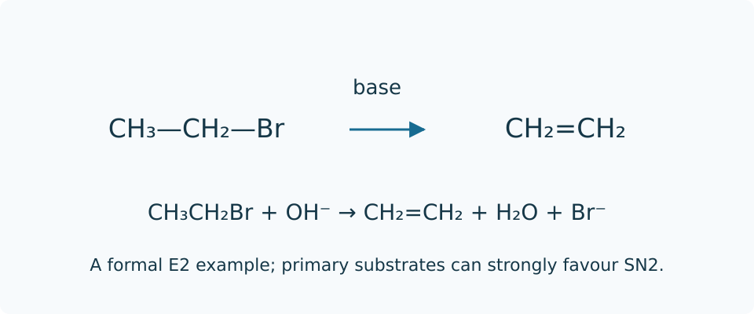
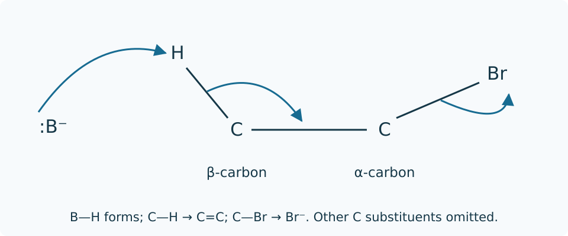
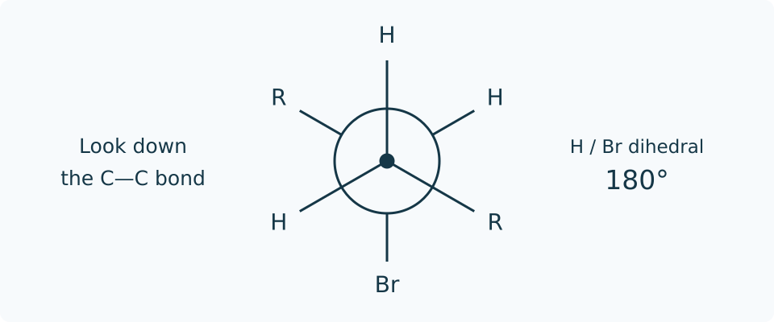
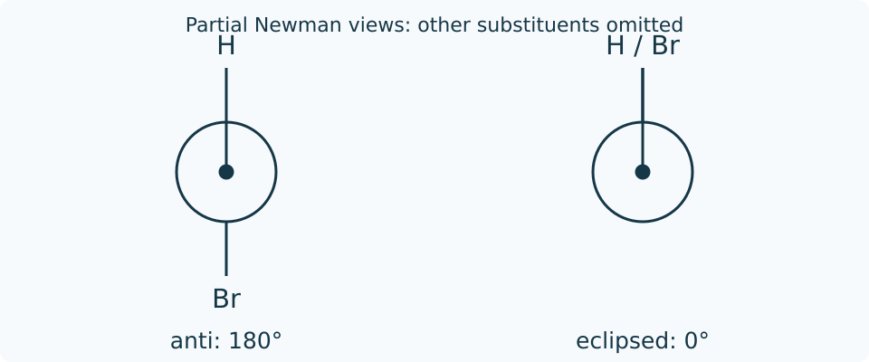
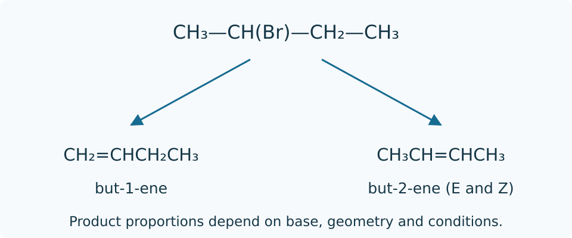
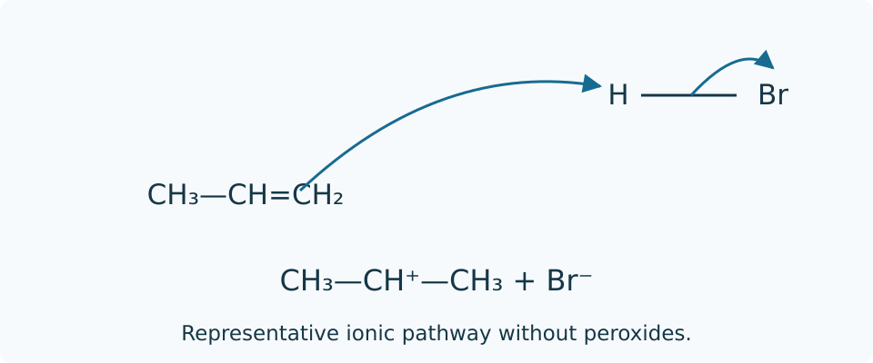
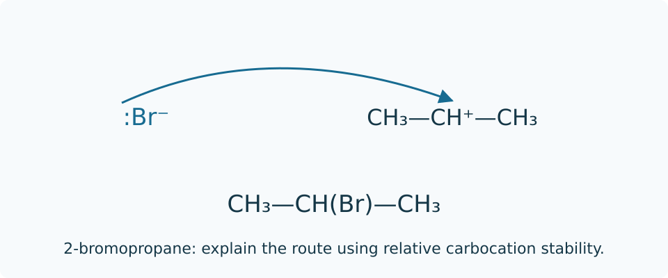
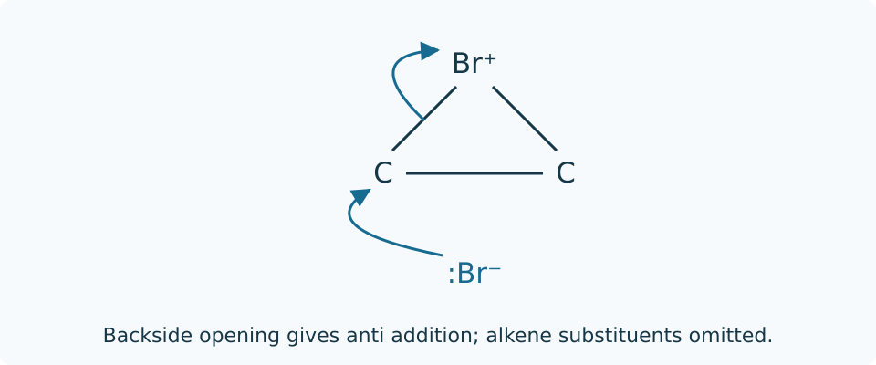
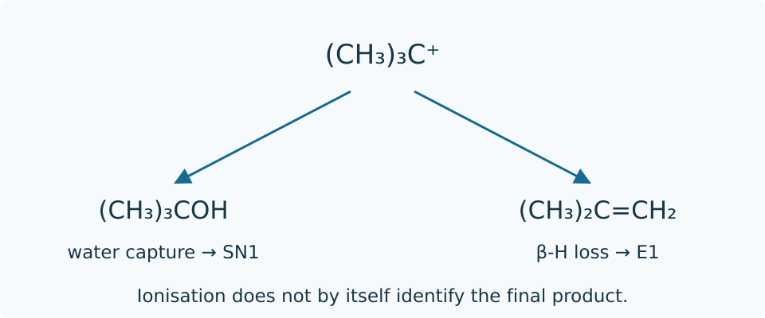
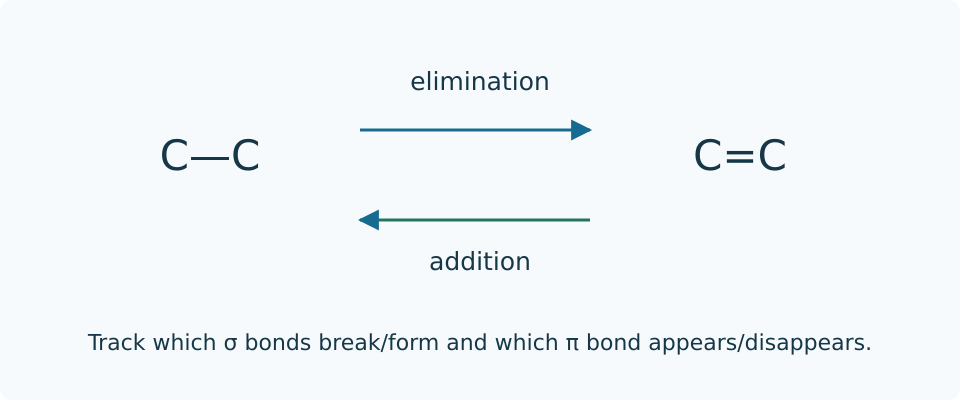

Week 3 · Make or consume a pi bond

A formal elimination of HBr from bromoethane forms ethene; a base receives H and bromide leaves.
A β-hydrogen and leaving group are lost from neighbouring carbons as a C=C bond forms.

The base-to-H, C–H-to-C–C and C–Br-to-Br arrows form the E2 electron-flow cycle.
Draw the base lone pair → β-H; C–H pair → C–C π bond; C–Br pair → Br.

A Newman projection shows a front-carbon hydrogen opposite a back-carbon bromine at 180 degrees.
An anti-periplanar C–H/C–Br arrangement supports the common E2 pathway. Read the viewing direction before choosing H.

Partial Newman projections compare anti and eclipsed H/Br arrangements.
Rotation about a single bond changes conformation, not connectivity. In a flexible molecule it can create an anti arrangement.

2-bromobutane can lose beta hydrogen in two positions to give but-1-ene or but-2-ene, with E/Z forms for the latter.
Locate possible β-carbons first. Geometry and conditions determine which of the possible alkenes are favoured.

Propene protonation by HBr forms the secondary carbocation and bromide in the representative ionic route.
The C=C π bond is an electron-pair source. Protonation giving the more stable carbocation explains this regioselectivity.

A bromide lone pair attacks the secondary propyl carbocation to produce 2-bromopropane.
The observed connectivity follows two steps: protonation, then nucleophile capture.

A bridged bromonium intermediate is opened by bromide attack from the opposite side.
Br₂ addition commonly proceeds through a bromonium bridge and anti opening, rather than the free-carbocation HBr model.

A tertiary carbocation can be captured by water or lose a beta hydrogen to form an alkene.
Ionisation followed by β-H loss gives E1; ionisation followed by capture gives SN1.

A C–C single bond becomes C=C in elimination; addition consumes a pi bond and makes new sigma bonds.
Check the specific atoms that gain and lose bonds. These labels do not make every pair of reactions exact reverses under identical conditions.
Attack at a saturated carbon can give substitution. Removal of β-H can give elimination. Donation of an alkene π pair to H gives addition.
The same electron-flow language applies to all three.
For HBr + propene, draw the two electron-flow steps and identify the intermediate.
Then explain why the simple carbocation model is inappropriate for Br₂ addition via bromonium.
Can methyl bromide undergo ordinary β-elimination? Draw its carbon skeleton before answering.
For 2-bromobutane, name each constitutional alkene and state which can have E/Z forms.
Complete the practice and worked examples, then the self-check.
Optional textbook support: selected Solomons chapter 7–8 sections. The reading guide explains the provisional book mapping.